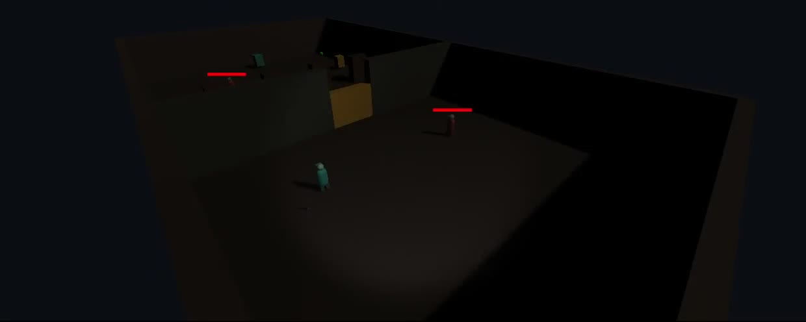

Experience
Explore a scene through fixed camera regions, then switch to a shoulder view for a different way of reading the same space.

Description
Two fixed-camera regions make the viewpoint depend on where the character is standing. Entering a new region changes the composition of the scene and the information visible ahead.
The shoulder-camera toggle provides an alternative framing. Together the camera modes demonstrate how a change of viewpoint affects navigation without requiring a different level.
Detailed features
Environment exploration
Movement and viewpoint work together to make the space readable. The player uses the controls to choose a route, judge distance, and position the character for the next interaction.
Atmospheric scene presentation
This part of the project contributes to the core interaction described above. Its role is presented through the project’s available interface, source, and visual preview.
Player and camera interaction
Movement and viewpoint work together to make the space readable. The player uses the controls to choose a route, judge distance, and position the character for the next interaction.
Build summary
The project is presented with Unity. Its implementation connects the input or controls, the project’s changing state, and the rendered interface. The Source action opens the saved code or build material for this entry.
- Technology
- Unity
- Scope
- Unity project
- Presentation
- 1240 × 496 · source quality
Feature video
Project recording · 1240 × 496 · Original resolution